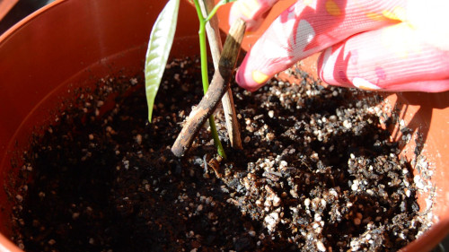
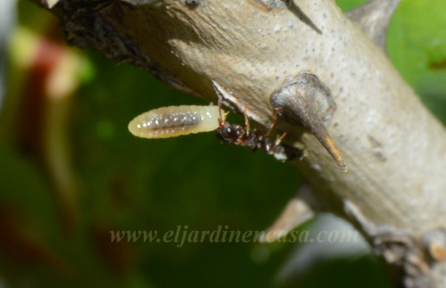

Mama tierra te invita a conocer los secretos de los huertos hogareños
Cómo eliminar mosquitas del sustrato
Veremos cómo eliminar esas molestas e insistentes mosquitas del sustrato que aparecen en nuestras plantas.
Leer más..Hormigas en el jardin de casa
Muchas veces solemos encontrar hormigas en el jardin en casa y no nos preocupamos si vemos unas pocas. Debemos controlar su población para evitar estragos.
Leer más..